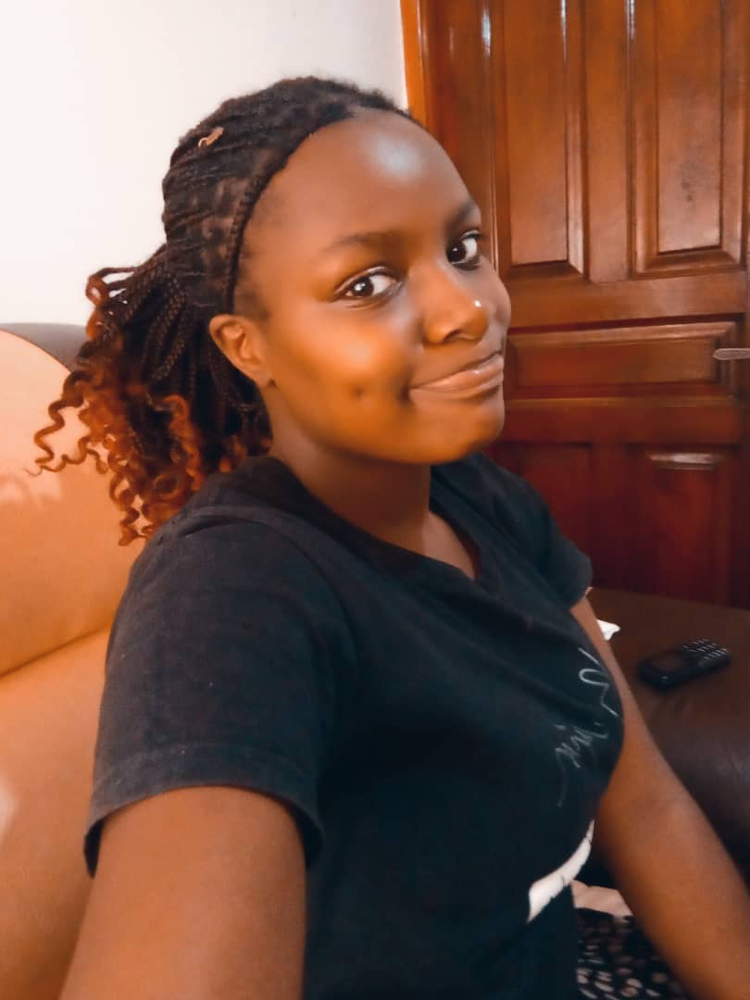

Hello,
I am Musiimenta Racheal, an aspiring Software Engineer from Rukungiri. I am 18 years old and currently a first-year, second-semester student at the Uganda National Institute of Information and Communications Technology. With a passion for software engineering and programming, I aspire to become a software engineer.
My journey into this exciting field began in Senior One at Ntungamo High School, where I fell in love with ICT. I continued with it through Senior Four and have since been inspired by the incredible benefits technology offers.
I thrive on exploring how technology can simplify and enhance our daily lives. I’m particularly interested in web development, mobile application design, and emerging fields like artificial intelligence and machine learning. I find joy in learning about new tools and frameworks, as they allow me to experiment and grow as a developer.
Beyond technology, I believe in the power of community and storytelling. I enjoy mentoring younger students, sharing my experiences, and encouraging more young people to explore ICT. I aspire to make a positive impact through innovation and creativity.
This is my favorite photo.
When I’m not studying or working on a project, I engage in activities that energize me and broaden my perspective. Here are some of my favorite hobbies:
Here’s a detailed look at my projects, achievements, and future goals:
Worked as a junior developer intern at a local tech startup, where I contributed to building an e-commerce platform using Python and Django.
Collaborated with peers to create a library management system, implementing a database backend and a user-friendly interface.
In the future, I aim to specialize in mobile app development and contribute to open-source projects. I also dream of founding a tech startup to address challenges in education and healthcare.
| Title | Author | Year Published |
|---|---|---|
| Oliver Twist | Charles Dickens | 1839 |
| Think Big | Ben Carson | 1996 |
| The Innovators | Walter Isaacson | 2014 |
| Introduction to Algorithms | Thomas H. Cormen | 2009 |
| Clean Code | Robert C. Martin | 2008 |